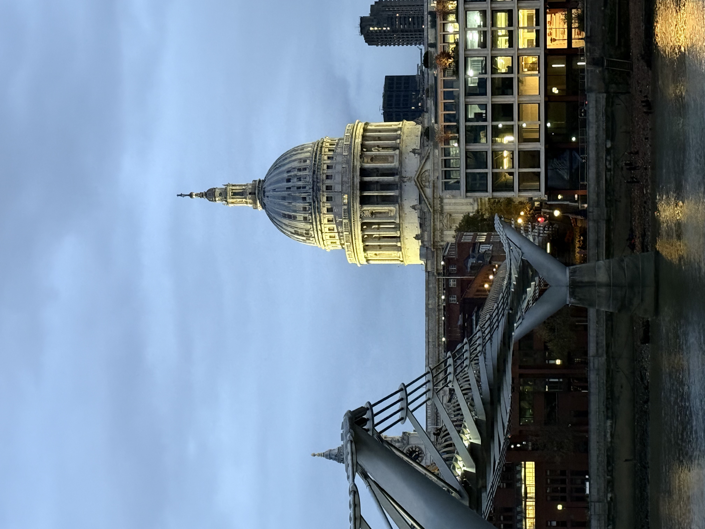
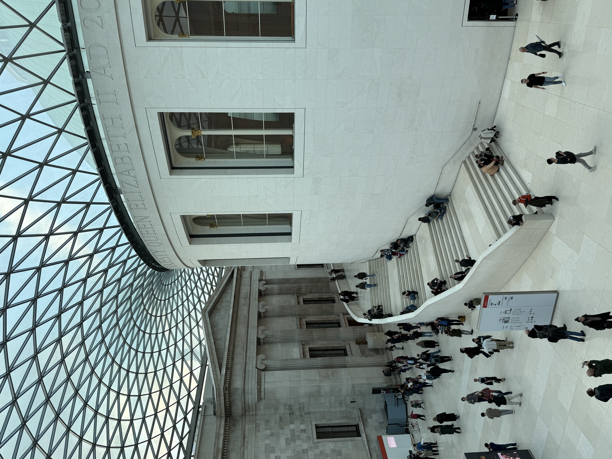
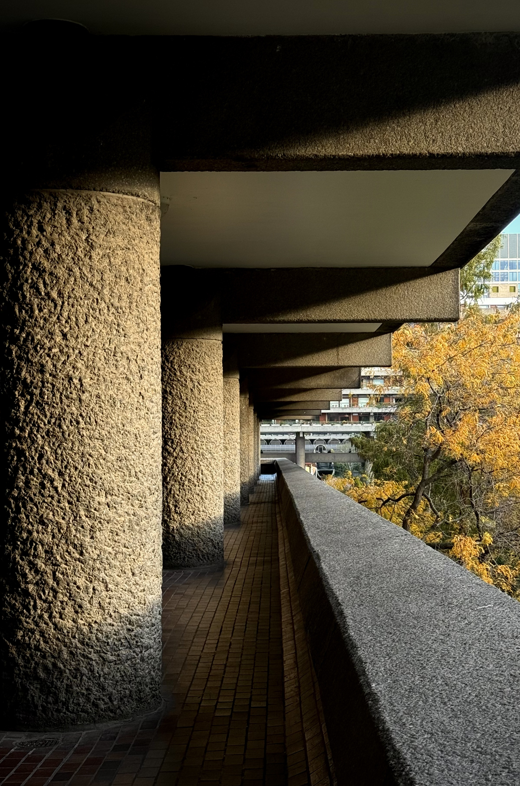
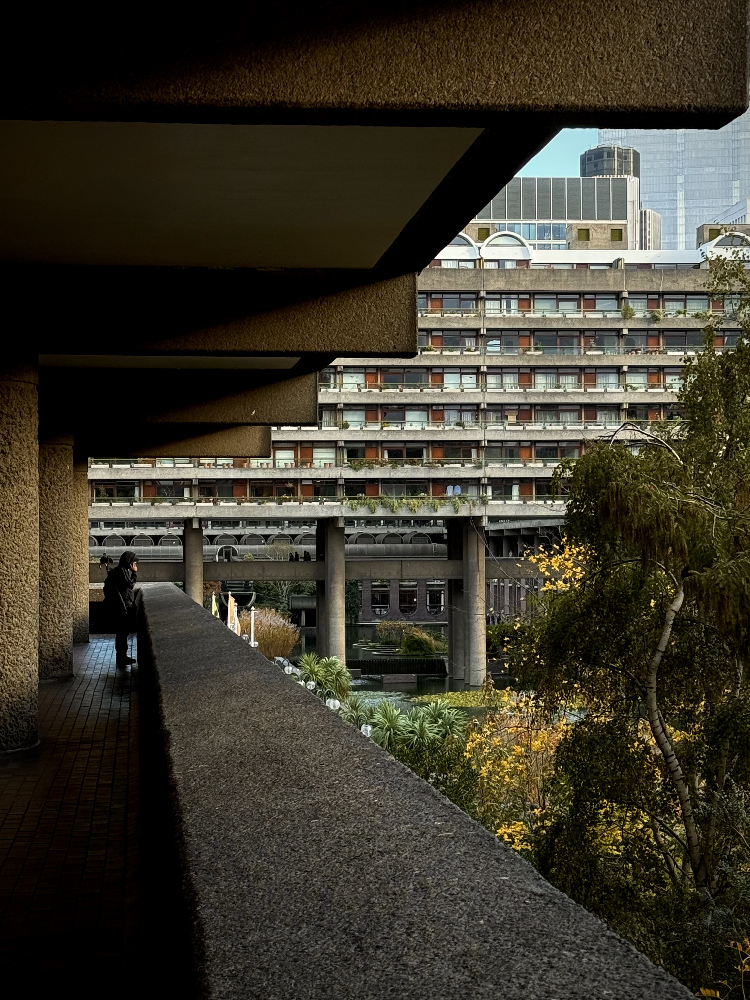
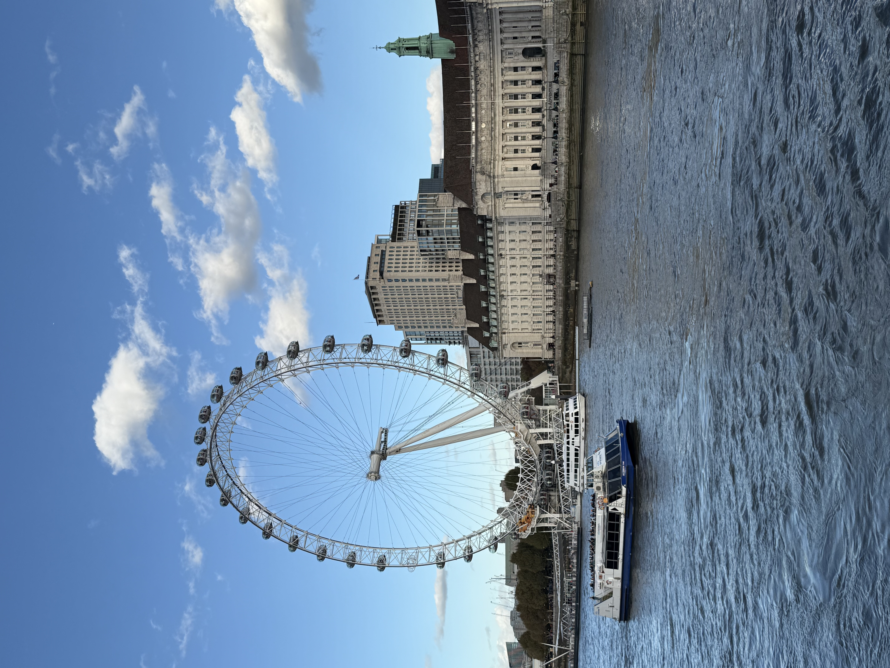
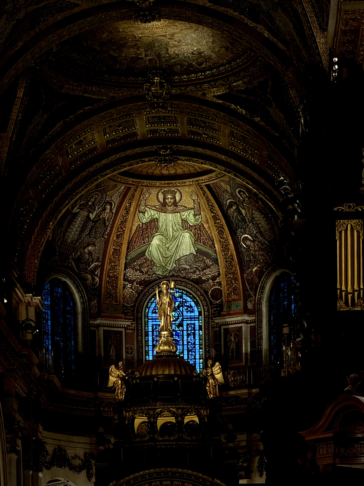

London
Toggle Color
Shuffle Photos
Back to Home

Millennium Bridge & St. Paul's Cathedral, 2025

British Museum, 2025

Barbican Centre, 2025

Barbican Centre, 2025

London Eye, 2025

St. Paul's Cathedral, 2025
Close